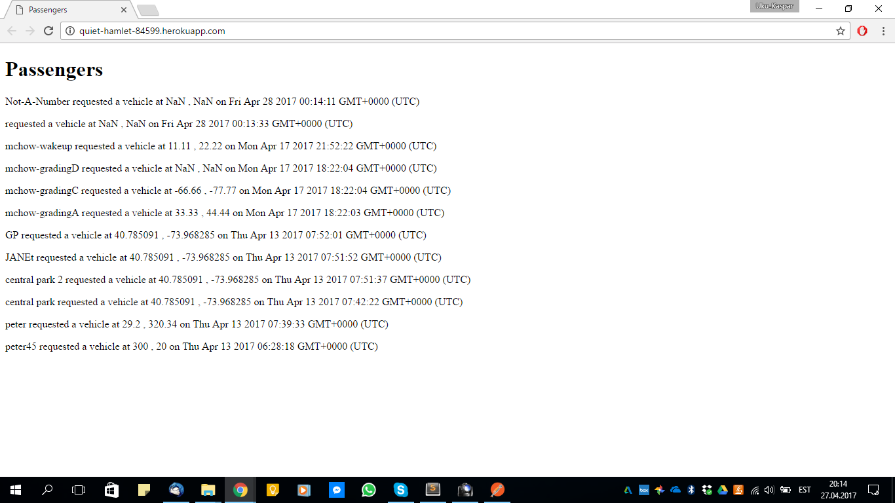
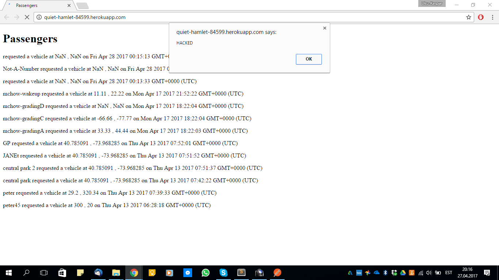
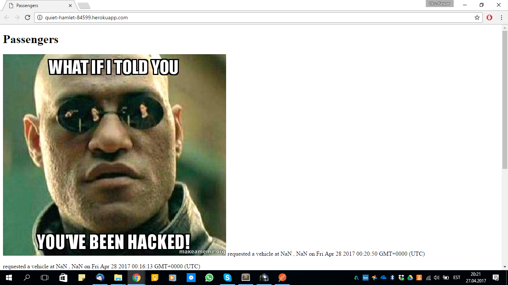
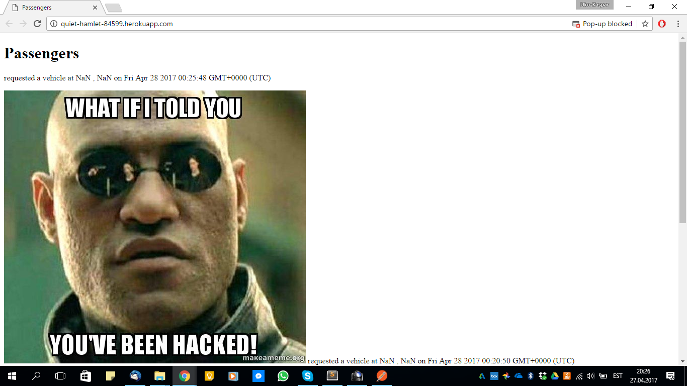
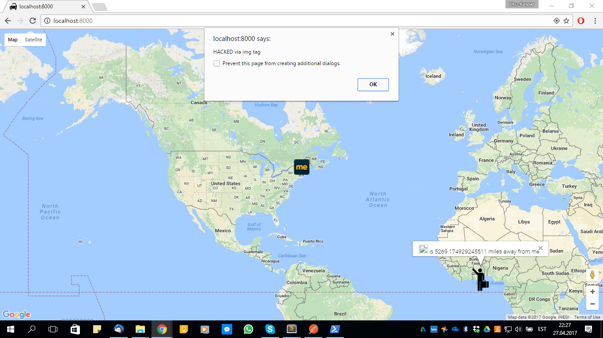
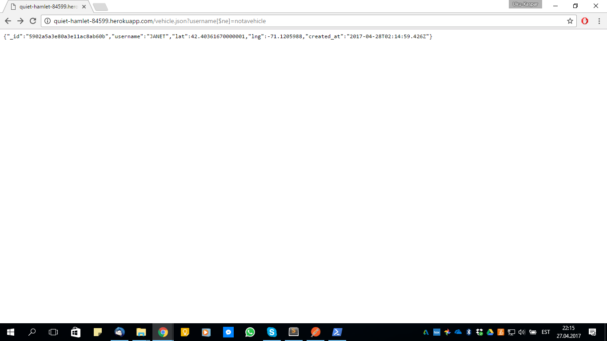
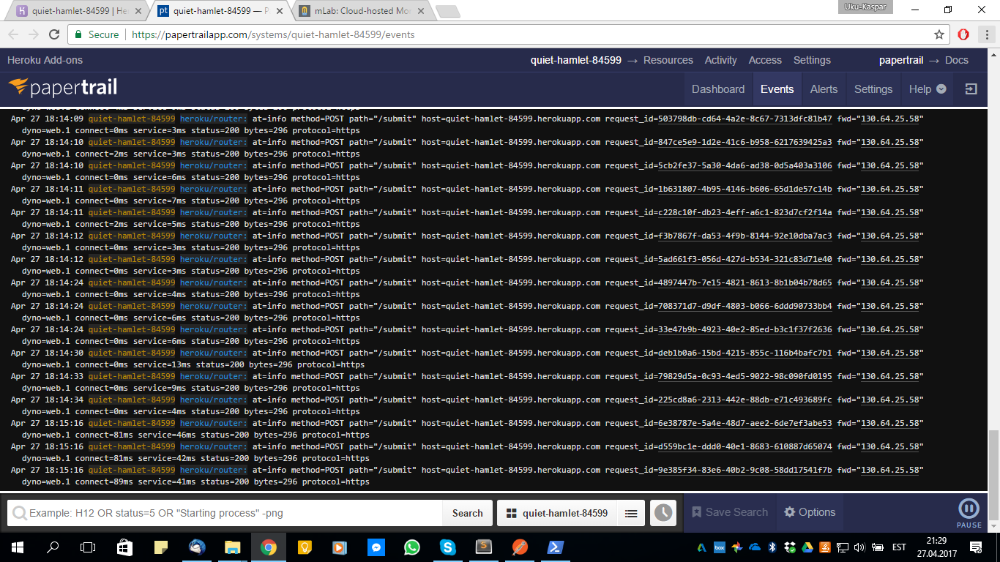
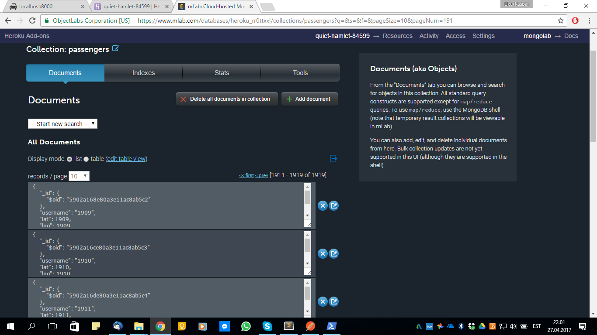
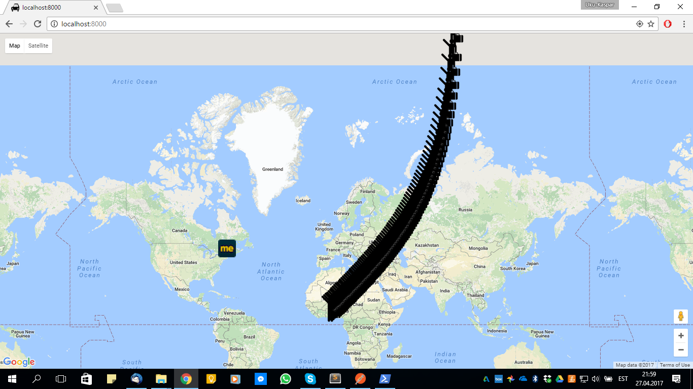

COMP20 HW4
UKU-KASPAR UUSTALU
25 APRIL 2017
Security Assessment
Introduction
The following is an in-comprehensive report outlining security flaws present in a ridesharing application imitator called NotUber. The imitator consists of two main components: a server-side database and API and a client-side (geo)graphical user interface.
The API allows read/write access to the database, where the usernames and geographical coordinates of passengers and drivers are stored. The client-side interface provides a represents the locations of either all drivers or passengers on a map via Google Maps API.
Methodology
A variety of common attacks were conducted. The server-side POST API was abused using Postman to identify XSS vulnerabilities. The server-side GET API was abused using a web browser to identify database injection vulnerabilities. Eventually the source code was analyzed and reviewed to identify and other vulnerability or other potential issues with the application.
Abstract of Findings
Four main issues were identified:
-
Malicious content could be entered into the database and then show to other uses due to user input going unchecked.
-
Access to the database is not secured, meaning anyone has read/write access to the database and in some cases data that is not meant to be publicly available could be easily read.
-
Client-side interface has complete faith in the server-side database and API. Content received from the server-side is never checked and automatically shown to the user. This ensures that all attacks and compromises to the server-side also "flow through" to the client-side.
-
The data traveling between the server-side and the client-side or the server-side and anyone else (keep in mind that anyone can access the database) could be easily intercepted and modified.
Issues Found
- Issue:
Latitude and longitude not verified to be numerical
- Location:
POST API
- Severity:
Low
- Description:
Although the application expects latitude and longitude to be floating point numbers, input is not rejected when latitude and longitude contain non-numerical data. Luckily non-numerical data inputed into these fields is sanitized and represented as NaN. However, since non-numerical input is not rejected, this causes the database to store broken data and "feed" broken data to the client-side application and user.
- Resolution:
Ensure latitude and longitude are numerical on input. Reject if otherwise.

- Issue:
XSS
- Location:
POST API
- Severity:
High
- Description:
Data entered into the username field is inserted into the database and embedded into the HTML of the GET API without being validated or sanitized. This allows malicious HTML content and scripts to be entered into the database and rendered to the user. This could allow hackers to potentially steal sensitive information and mislead users. Here are a few examples XSS attacks could result in:
-
Unwanted content (text, images, etc.) inserted into website.
-
Annoying alert messages.
-
Popup windows.
-
User being redirected to a different website.
-
A broken script or infinite loop/recursion causing the browser to crash and rendering the website useless.
- Resolution:
Never-ever-ever trust user input! (Ensure data entered into the username field is alphanumerical on input. Reject if otherwise.)



- Issue:
Inadequate data validation in client-side application
- Location:
Client-side
- Severity:
Medium
- Description:
Data obtained from the database by the client-side application using the server-side API is not validated nor sanitized. If the database were secure and data entered into the database were adequately validated and sanitized by the server-side API, this would not be a problem. However, since the database is compromised, this allows malicious content from the database to also infect the client-side application. Luckily the Google Maps API used removes all obvious script segments before rendering the website. However, other unwanted content (text, images, etc.) will still be rendered and malicious script segments could still be inserted via broken img tags.
- Resolution:
Secure database or validate and sanitize data obtained form the database.

- Issue:
Database injection
- Location:
GET vehicle.json API
- Severity:
Medium
- Description:
Data inserted into the GET vehicle.json API query string is not validated nor sanitized. This opens up the possibility of database injection. The API is intended to provide data associated with a specific username to the client if and only if the client knows said username. However, if a [$ne] tag and a dummy username are used in the query string, the API returns the first vehicle entry in the database. This kind of a query tells the database to return all entries that are not the dummy username. Luckily the specific implementation of this API only compromises the first entry in the database. If the API were differently designed, this could result in the return of all vehicle entries and the whole database being compromised.
- Resolution:
Validate and sanitize query string input and/or require authentication to access the database.

- Issue:
CORS enabled
- Location:
Server-side API
- Severity:
High
- Description:
CORS is enabled for the server-side API, meaning anyone has read/write access to the database via the API. While the API can still limit how the database can be accessed, the modest methods provided by the API could still be abused by anyone. In our case:
-
All vehicle entries can be easily obtained by anyone via the POST API.
-
All passenger entries can be easily obtained by anyone via the GET API.
-
Anyone could enter an infinite number of dummy objects into the database using the POST API, resulting in false information and a potential overload and breakdown of the database. I easily wrote a script that created infinite AJAX requests each of which inserted an unique dummy entry into the database via the POST API. After running the script for only a few seconds, almost 2000 dummy entries were already entered into the database.
- Resolution:
Disable CORS and/or require authentication to access the API and database. (However, even if CORS is disabled, an XSS vulnerability could still be abused to insert a similar database populating script into the website of the application itself.)



- Issue:
HTTP
- Location:
Whole application
- Severity:
High
- Description:
The use of an insecure connection allows the data traveling between the client-side and the server-side of the application (or in the case of CORS enabled, anyone and the server-side) to be intercepted and modified. This could cause sensitive data to be compromised and potentially modified en route. In the case of an actual ridesharing application, this would encourage criminal activity and could cause potentially dangerous situations.
- Resolution:
Use HTTPS, ensuring the use of an SSL connection and the encryption of sensitive data. Requiring authentication to use the application is also an excellent idea.
Conclusion
Unfortunately this ridesharing application imitator suffers from a number of fairly severe security threats. Fortunately, however, this application is meant to merely imitate a ridesharign service. These security flaws would be unacceptable for an actual ridesharing service as they would severely compromise the safety and privacy of both the users and the employees of the service. The main improvements that should be made are:
-
Validation and sanitation of all user input
-
Requiring authentication to access the service
-
Disabling CORS
-
Using HTTPS
References